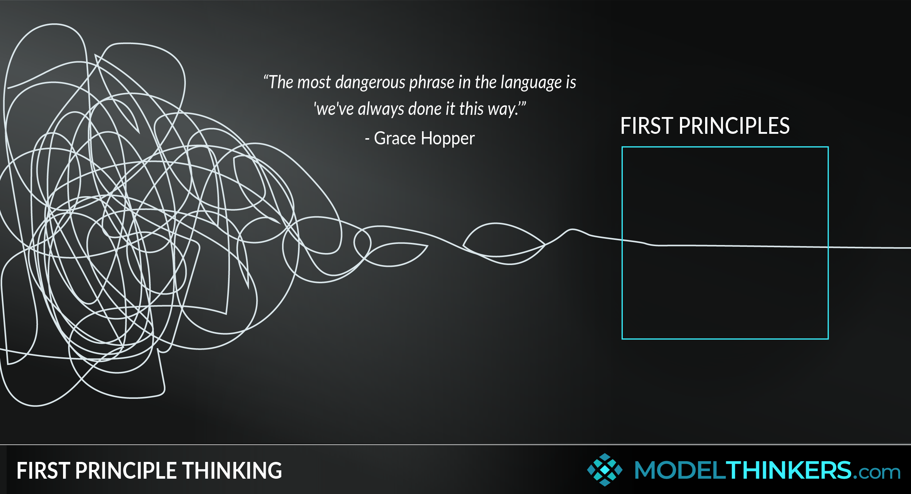
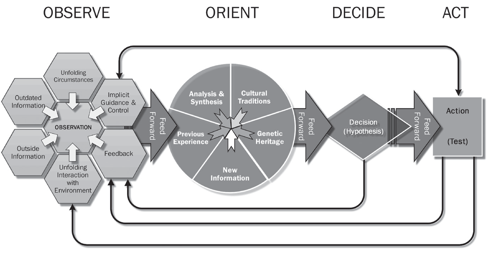
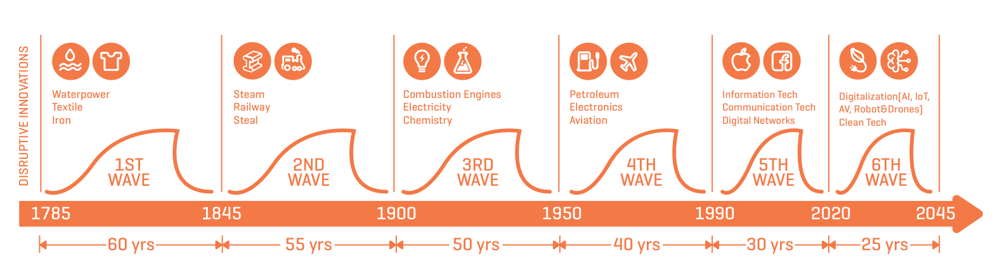
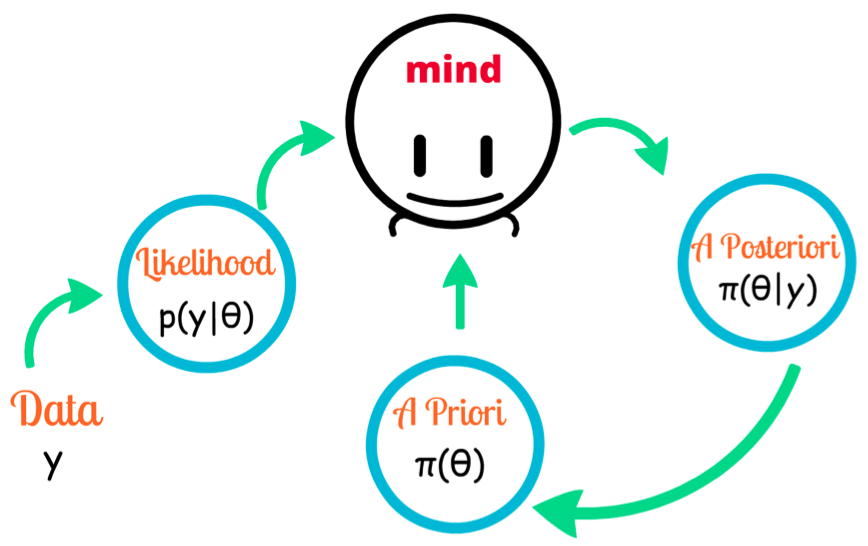
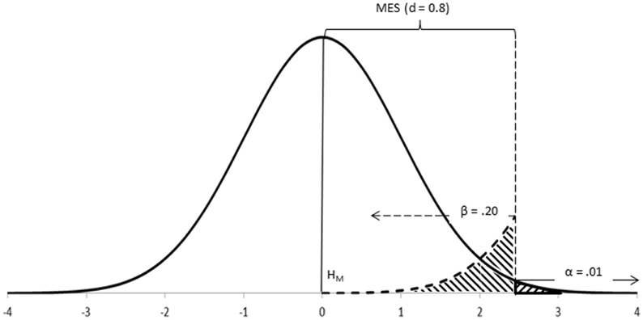
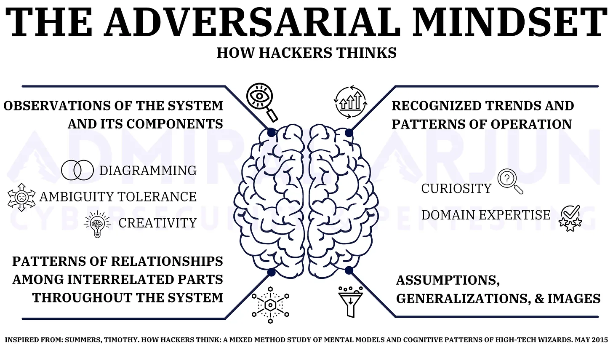
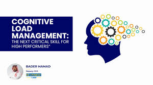
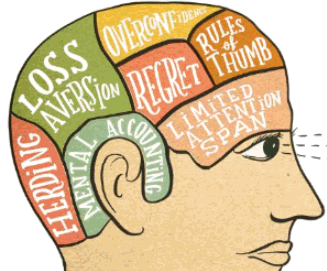
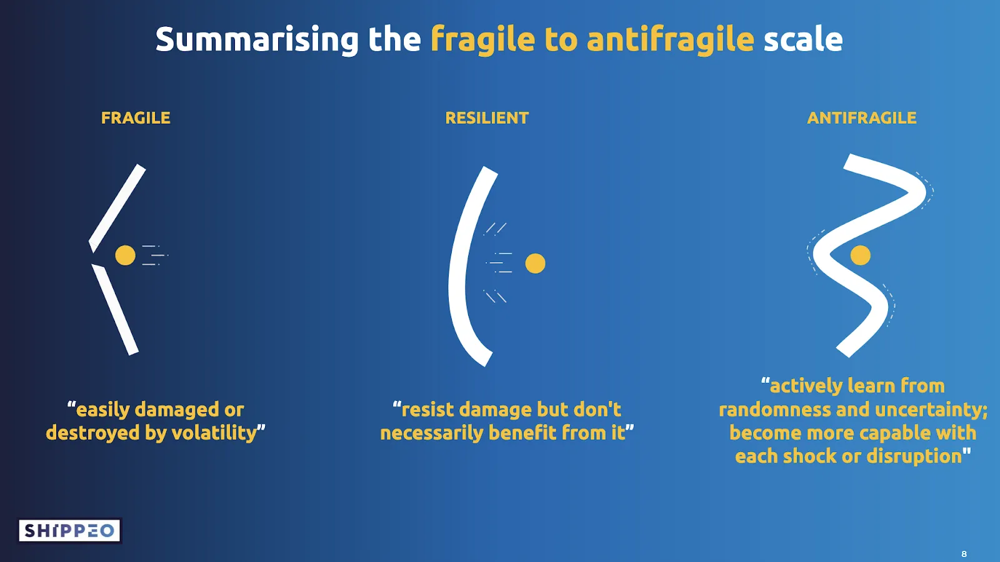

Let me tell you a story about myself...
Through life’s numerous obstacles, sharp turns, and potholes, I’ve began to discover that success isn’t linear, but rather deliberate. Today and in the past, my friends, family & society have taught me the value of passion, discipline, and leadership – things I hold today to set a compelling foundation for students my age. I have done this through the pursuit of high grades, societies & clubs that gave me joy and camaraderie, and close relationships with friends.
Today, my focus is on independence and sovereignty. From learning how to exact change by breaking internal and external constraints, chasing after opportunities to do things faster & smarter than everyone else, and emphasizing the freedom to think, feel, and create – I am building a sense of identity and purpose that helps me navigate and enjoy the world I’m living in. For long, I’ve been a passionate candidate for business problem-solving, software programming, data analytics, and entrepreneurial ideas – where I constantly focus on bettering myself, seeking out more information, and working towards my financial goals. I hold virtuous stances on the right to privacy & freedom of expression, belief in fairness and equal opportunity, and systems to efficiently allocate money, time, and energy to an individual’s sovereignty – defined as their ability to live life without constraints.
Let’s dive in. Below, I will take you through a journey of my professional past, highlighting the numerous experiences that have shaped who I am today.
Timeline - My Professional Past
Micheal Power, St. Joseph Catholic High School
I went to high school at Michael Power St. Joseph Catholic High School. This school is where I met some of my lifelong friends, and have been shaped by teachers that have genuinely cared about me. In my journey at MPSJ, my International Baccalaureate (IB) program was marked by an intellectual obstacle course – where I endured significant challenges that challenged my ability to study, learn and prepare.
In the IB Program, I was required to complete CAS (Community, Activity, and Service) work. I organized a French Seminar with a close friend, participated in my school’s student council and drumline team, and completed community service through cadet training and tagging, as well as working a position as a Focus on Youth camp counselor.
I additionally was to write an extended scientific essay totaling 3,500-4,000 words, as well as numerous IAs for each specific course, ranging from a recorded oral in English about core literature topics in Hamlet, a French Oral discussing broad topics in artwork and Parisian culture, a Biology empirical paper analyzing the effect of blood pressure on test scores, a 10-page paper on a mathematical construct and its applicable uses in major scientific fields, and lengthy, weekly tests.
Air Cadets
I began cadets at the start of grade 8, a year older than many people in my cohort. Cadets was intimidating, at first, but I soon began to make friends with people that I now consider lifelong, unforgettable friends. I also learned the value of discipline and drill, and have developed deep, true respect for canadian military parades, because it is a testament to umatched discipline and team cohesion.
At some point, air cadets sparked my interest in becoming a commercial pilot. I enjoyed learning about aerospace and defense technologies, core plane education such as bernouilli’s principle, propulsion and exhaustion, heat management, and folding parachutes. Additionally, I learned how to iron my shirt and pants, make my bed, conduct myself, and respect the hierarchy of the chain of command. I’ve learned the value of waking up early and sleeping on time – things that I struggle with even today, but put in effort to accomplish as consistently as possible. I’ve learned the importance of being as physically fit as one possibly can, through annual days referred to as “Physicals”, where you come in cadet-issued shirts and shorts, and are expected to perform to the best of your physical ability in order to win particular rewards. I conducted Field Training Exercises (FTX), which were one of my favourite programs, which emphasized survival and discipline in the woods. We also ate MREs and rations, and were to simulate real survival in upper level programs.
Life at Starbucks
My first part-time job, Starbucks, is marked as one of the single most difficult experiences that I’ve ever endured. I was expected to learn to perform the job quickly, including roles such as the Customer Support (CS) routine, the Espresso Bar, the Drive-Thru, the Front Point-Of-Sale (POS), and the Warming Station. It was a challenge to learn particular routines and cycles – however, my accuracy was critical to the team’s success.
This doesn’t even accompany the full gist of the breadth of work that I did. I was expected to connect with customer, restock during downtime as much as possible to prepare for rushes and peaks, make backups, do cleaning and cycle tasks, close and clean down certain stations to assist the closing team, and assist the bar or drive thru person when necessary. Call outs were common – much more common than I initially expected.
I remember my first rude customer. I remember staring at the till in fear, taking other people’s orders, holding back immense shame seeing my supervisor take the blunt of insults and shouting because of what I did. I still remember her saying to me “this is all your fault.” Challenges after challenges stacked, and on New Years’ Eve, I remember having a mental breakdown in front of my parents about how I wanted to quit and everyone was treating me like garbage.
Slowly and steadily, I learned how to be better, but through it I developed mental resilience and a goal that I was going to solely focus on improving myself. Through resilience, conditioning, and constant reminders, I improved my focus and speed on bar, and my ability to help and support my team during critical moments. I learned how to show up at my best when I was tired and mentally exhausted, and learned to save and invest aggressively so I could dream bigger.
Pursuing The Psychology Program At UTM:
My initial goal following my first year in undergraduate university was to become a clinical psychologist, who could help extraordinary youths find success and become their best selves. I was also focused on pursuing the Psychology major to improve myself, how I could learn my own breaking points, and addressing my own mental health problems and issues.
The key weaknesses of my psychology program was the focus on experimentation and mental constructs rather than the search of morality and virtuous behavior. After my terrible experience in IB with biology and chemistry, neuroscience was a field that brought me absolutely no joy, and never seemed to feel truly relevant and connected with the world of entrepreneurship that I wanted to pursue.
Switching To Digital Enterprise Management (DEM):
Discovering the Digital Enterprise Management (DEM) Specialist program was a turning point that validated my needs for becoming an entrepreneur and building things of immense value that would help others. I accidentally attended an ICCIT Gala called “Solaris”, for which I thought was an official, end-of-year Gala hosted by UTM, however was one of the greatest things I could’ve ever done for my professional career. I was surrounded by the right people at the right time, and the alumni that attended that event sparked the flame in me which serves my motivation for being in the DEM program.
Most people see this program as a stepping stone credential into marketing and design roles. In some respects, some people in this program also pursue IT management, security, AI, project management, software development, and risk management. For me, I saw this program as the stepping store I needed to create cutting-edge technologies, come up with world-class, market-ready ideas, and lead large IPO roadshows and Private Placements for companies that would lead the future of technology. And such a goal makes absolutely no sense to the majority of people I talk to, but it is the hard path lacking clear validation and feedback, with potential to earn a significant, disruptive return if executed successfully.
Research & Innovation (R&I) at the Digital Enterprise Management Association (DEMA):
Fast forward 1 year later, after failing my campaign as a Marketing Director for DEMA, a colleague of mine – who deeply admired my campaign, spearheaded the creation of the Research & Innovation department, and asked me to be a lead contributor because of the drive and great ideas for change pitched in my marketing campaign. Being given the opportunity to become a Research & Innovation associate sparked my entrepreneurial drive to create, explore, and embark on professional topics that would make DEMA stand out as a school society. Together, with my director, I wanted to lead the face of the Research & Innovation department and showcase immense competence, creativity, and structured idea synthesis aligned with DEMA’s mission: “Shape leaders, create possibilities, champion innovation.”
Structural issues, communication breakdowns, unaligned objectives and priorities, and scope creep led to the destruction of our department. I realized that what I thought would be a professional skunk works was highly curated corporate theatre, marked by incompetent, ego-driven student leaders & power imbalances. Frustration & resentment arose when I wasn’t able to mobilize the right amount of people to mentor and build my ideas with, that we were focusing on the wrong things with very little opportunity for adequate communication, mentorship, or even connection. As time went on, the department felt like a facade rather than a professional platform.
This experience was heartbreaking for me, both with respect to the ideas that I wanted to make, the people I wanted to mentor and teach, and the power I wanted to have – which slowly faded away. But in this experience, I was motivated to seek out the unequivocable truth. I wanted to stop grounding my ideas in mere potential and theoretical brilliance but ground it in data-driven, rigorous, precedent-backed evidence.
Making The Decision To Enroll in CFA Level 1:
Thusforth, after my experience and failed projects in Research & Innovation, I realized that I wanted to practice business at the highest possible level. I tackled a significant weakness in my arsenal of entrepreneurship, that I felt made me embarrassingly incompetent to not fully internalize and understand – that was finance. I disliked that people in the BBA program could interpret financial forecasts with rigorous fluency, were taught basic accounting – yet I was a DEM student playing in their same leagues with very little of the same understanding. At first, I considered learning Finance from Coursera and Udemy, the same way that I picked up Python’s data science library and Blender for 3D artistry.
At a Young Entrepreneur's Conference (YEC) event with a PwC Manager, I told him about my desire to break into finance and learn about investment management. He urged me to take the Chartered Financial Analyst (CFA) program, a globally recognized professional credential which thoroughly trains you to understand all aspects of financial research. He introduced me to several people, who also suggested that I take the CFA, albeit that the program was very difficult and that I needed to invest significant amounts of time into the course.
Throughout researching the rigorous, minimum 300 hour study window of the CFA, I wanted to test my resolve and grit by applying every single missed learning opportunity, every single academic shortfall into passing CFA Level 1. I still remember asking my dad to enroll me in the CFA program, and I felt immense validation when he told my mom in the normal, unfiltered, uncomplimentary way “this is good”.
And so, from mid-April to September, I took it upon myself to dig deep into the CFA curriculum, and learn business at the most rigorous level. I delved into Statistics, Economics, Corporate Finance, Accounting, Equities, Advanced TVM & Fixed Income, Derivatives, Alternative Investments, Portfolio Management, and Ethics. Already, these topics strike fear to many students who dislike deeply mathematical concepts and confusing financial jargon – however, my love for math and problem-solving made me waltz into the program with genuine curiosity. I’d dedicate 5-6 hours doing questions on the Learning Ecosystem, and dedicating myself to 1 chapter a day for at least 90 days, while working 30-35 hours at Starbucks weekly to fund my tuition.
And in my journey, it took an immense amount of effort in reminding myself why I was doing what I was doing. Part of it was to show the people, especially the people in my association that overlooked and even disregarded my efforts, that I was more than just a DEM student. I wanted to be the best in my field, representing the highest standards for what a DEM student can accomplish and achieve. In my pursuit of excellence, I developed a unique ethos to leadership and my own standards that emphasized facing my own professional fears. Whether it was being questioned, or presenting in front of an audience, or even appealing a disagreement with a professor, I particularly emphasized normalizing these behaviors to alleviate my anxiety of the gravity of the situation. My pursuit of the CFA, and it’s rigorous, unrelenting pace made me enjoy rigor and strive to achieve the highest level of readiness in professional environments compared to anyone else.
Today: Achieve, Connect, Empower (ACE) UTM & UTM Capital:
Today, I’m actively engaged in two student organizations that represent the convergence of leadership, finance, and community-building — ACE UTM and UTM Capital.
With ACE UTM (Achieve, Connect, Empower), I’ve found a platform to elevate peers through actionable career prep, real-world insights, and growth-oriented programming. Unlike typical student clubs that focus solely on events or socials, ACE prioritizes high-performance development — mentorship, networking, and practical training that prepares students to compete and thrive in elite corporate environments. My involvement is driven by one goal: to create a pipeline of confident, competent student leaders who can walk into any boardroom and hold their own.
Meanwhile, UTM Capital has become my space to channel everything I’ve learned through DEM, CFA, and my own entrepreneurial research into structured, investment-grade financial thinking. Whether it's through investment memos, macro reports, equity valuations, or sector analyses, the club functions like a student-run asset manager — one that prioritizes analytical clarity, conviction-based ideas, and a respect for risk. My contributions here are both strategic and educational: I want to help raise the standard of student finance to institutional levels.
Both organizations are where I continue to practice what I preach — lead with insight, build with data, and execute with ambition.
Principles:
Introduction
In business strategy, financial analysis, and entrepreneurship, I’ve dedicated myself to following an 10-fold framework, consisting of strategies originated of my own philosophy and personal experiences. These strategies are built to efficiently allocate cognitive resources to highly accurate, defensible research, models, insights, actions, strategies, and business ideas – in as little as time as possible, with as little energy expended as possible - maintaining flow state and sustaining stamina for heavy workloads across multiple clients.
First Principles
“What is absolutely true, and what is just an assumption?”
Used by highly successful individuals like Elon Musk & Ray Dalio, First Principles thinking is the art of deconstructing complex questions and identifying the fundamental truths beneath them. The goal is to cut through assumptions and isolate the principal causal relationships underlying a problem.
Core Subcomponents
By Whom Is It Used?
Hedge fund managers, elite negotiators, senior engineers, and theoretical physicists rely on First Principles thinking because their fields demand solutions that go beyond conventional logic. In high-stakes environments—such as portfolio construction, crisis negotiation, or designing spacecraft—assumptions can distort decision-making. These professionals strip problems down to their fundamental variables so they can model behavior, predict outcomes, and construct strategies that outperform traditional, assumption-based thinking.
Mental Model Stacking
“What’s another way to look at the exact same problem?”
Mental model stacking is the practice of applying multiple frameworks or lenses from different disciplines to gain a deeper, more accurate understanding of a problem. Instead of relying on one approach, you layer several mental models to test, challenge, and enhance your solution from different angles.
By Whom Is It Used?
Used by multidisciplinary thinkers such as management consultants, investors, systems engineers, and high-level strategists who need to integrate insights across psychology, economics, engineering, biology, statistics, and philosophy. These professionals avoid 'single-lens thinking' and instead rely on a toolkit of frameworks to process complexity.
Core Subcomponents
The OODA Loop
“What’s the major decision workflow I need to follow under limited time constraints?”
The OODA Loop — short for Observe, Orient, Decide, Act — is a rapid decision-making framework originally developed by U.S. Air Force Colonel John Boyd for fighter pilots. It’s now widely used in business, strategy, and high-stakes environments where speed, clarity, and adaptability win. It’s not a one-time loop — it’s a continuous, self-correcting feedback system that helps you adapt your decisions as new information becomes available.
By Whom Is It Used?
Used by fighter pilots, military commanders, security analysts, hedge fund traders, emergency responders, and business leaders operating in fast-changing, high-stakes environments where speed and adaptability determine success.
Core Subcomponents
Schumpeter's Theory of Creative Destruction
“What needs to be broken and rebuilt for progress to happen?”
Joseph Schumpeter’s theory views innovation as creative destruction – the process of dismantling old systems, processes, or products to make room for new, better ones. In business and strategy, this means that true innovation doesn’t just add on – it displaces.
By Whom Is It Used?
Economists, innovators, product designers, venture capitalists, and disruptive entrepreneurs use Creative Destruction to understand and exploit the cycles of innovation that reshape industries. Companies like Tesla, Apple, NVIDIA, and Amazon actively apply this model to outpace incumbents.
Core Subcomponents
Bayesian Inferencing
“What’s the probability of these events happening?”
Bayesian Inferencing is a statistical technique that involves updating the probability of your assumptions when new information enters the environment. The core focus is probabilistic thinking, recalibrating your assumptions as you obtain more information.
By Whom Is It Used?
Data scientists, AI researchers, quantitative analysts, poker players, epidemiologists, and intelligence agencies use Bayesian reasoning to update beliefs under uncertainty and make probability-driven decisions.
Neyman-Pearson Hypothesis Testing Framework
“Is the change real?”
The Neyman-Pearson framework formalizes decision-making under uncertainty — where you test competing hypotheses and minimize the risk of being wrong. It’s not about "maybe"; it's about rigorously rejecting bad ideas and defending good ones with statistical strength.
By Whom Is It Used?
Statisticians, analysts, product teams, financial researchers, pharmaceutical companies, and economists use hypothesis testing to validate decisions with statistical rigor rather than intuition or anecdote.
Adversarial Thinking
“How will my adversaries respond?”
Adversarial thinking is the mindset of building systems, strategies, and arguments that withstand intelligent attack. You don’t focus on how to beat your opponent — you focus on ensuring they can’t beat you. This means preemptively identifying weaknesses, anticipating counterplay, and pressure-testing your position from the perspective of a motivated adversary.
By Whom Is It Used?
Cybersecurity engineers, military planners, esports professionals, intelligence analysts, negotiation experts, and management consultants use adversarial thinking to build systems resilient to intelligent attackers.
Cognitive Load Management
“How do I manage the weight?”
This model is about managing the limited bandwidth of your attention, decision-making power, and focus—especially under complexity, fatigue, and pressure. It isn’t just about avoiding burnout; it’s about deploying your cognitive horsepower with precision.
By Whom Is It Used?
Executives, students, surgeons, pilots, programmers, athletes, and anyone under high mental workload use cognitive load strategies to protect decision-making clarity and maintain peak performance.
Behavioral Biases
“What stops my better judgment?”
Used by highly successful individuals like Elon Musk & Ray Dalio, First Principles thinking is the art of deconstructing complex questions and identifying the fundamental truths beneath them. The goal is to cut through assumptions and isolate the principal causal relationships underlying a problem.
By Whom Is It Used?
Investors, psychologists, policymakers, marketers, UX designers, and risk managers use behavioral bias frameworks to predict and correct irrational human behavior.
Antifragility
“How do I gain from pressure?”
Antifragility isn’t just resilience. It’s growth under pressure. It’s the mindset, systems, and mechanisms that feed on chaos, volatility, or failure to become stronger — not weaker. While fragile systems break and resilient systems endure, antifragile systems adapt, improve, and evolve.
By Whom Is It Used?
Traders, entrepreneurs, military strategists, systems architects, evolutionary biologists, and high-performance athletes rely on antifragility to gain from stressors rather than merely survive them.